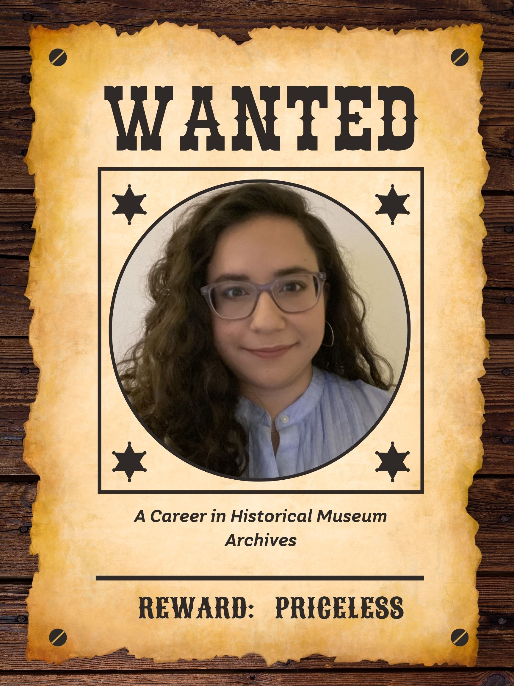

Clara Fouser, Eric Frawley, Laura McNamara, Lily Spar

Ecological Overview
Alejandra, or “Ale,” Gaeta (she/her) is the Associate Director of the Archives and Library at the Autry Museum of the American West, where she is responsible for overseeing the physical management and processing of the Autry Museum’s manuscript and archive collections, as well as their institutional archives. She was recently promoted to this position from her previous role as Archivist/Librarian.
The Autry Museum of the American West–named after Western actor Gene Autry–describes their mission as “bring[ing] together the stories of all peoples of the American West, connecting the past with the present to inspire our shared future.” The museum’s main campus in Griffith Park exhibits art, photographs, Hollywood memorabilia, firearms, Indigenous artifacts from daily life, and other cultural objects. Within the LIS field, the Autry is perhaps most notable for having one of the largest collections of Native American artifacts in the country, but it also stewards collections on California history, environmental history, cowboys, archaeology, and modern pop culture.
The James R. Parks Library and Archives comprise the Autry’s scholarly hub. As their Associate Director, Ale is concerned not only with the museum’s exhibition of archival objects, but also with mindful stewardship and conservation, consultation with Native nations and repatriation, and the facilitation of scholarship.
We were connected to Ale thanks to an introduction by Liza Posas at the Lucas Museum of Narrative Art. We were interested in following one person’s path from the UCLA MLIS program to a local archival institution. Ale’s experiences were especially useful to us because of her specific insights into the administrative component of management, juggling responsibilities on a small team, and the intersection of archiving and librarianship.
An ecological framing of archivist and librarian roles within museum spaces helps to situate these roles in the larger web of institutional practices and relationships. Archivist and librarian roles are influenced by factors such as technology, funding, collaboration, and resources. With such varying influences, we can understand the roles of archivists and librarians to be quite dynamic in the face of changing responsibilities over time. Within the LIS field, roles that combine archival and library functions (such as Ale’s archivist/librarian role discussed in our interview) demonstrate how professionals can be expected to occupy multiple functions within this ecosystem.
A Day in the Life
Ale’s workflow and priorities change from day to day. Being in a leadership role on a small team, Ale is making her own schedule and jumping in wherever she can help.
As a museum archivist and librarian, Ale is:
As a manager, Ale is:
Sample Job Descriptions
These current job postings trace a similar trajectory to the one that Ale demonstrated. All skills listed are copied verbatim, though several sections were cut from the Director position for brevity.
Entry level: Project Processing Archivist - Temporary Appointment at Bancroft Library, UC Berkeley
Mid Level: Special Collections Archivist II - Getty Research Institute
Senior Level: Director of Archives & Special Collections - GLBT Historical Society
Collections and Digital Archives
Reference Services and Outreach
Technical Skills Snapshot
Ale’s Perspective for skills expected of an entry level hire: Transferable skills that are relevant for archiving tasks: detail oriented, adaptable, analytic thinking, written communication skills, public speaking, experience handling a multi-step project.
Technical skills to target: cataloging, metadata, digital preservation systems (ArchiveSpace, Fixity, BitCurator), programming languages (Python, XML), digital tools (OpenRefine, checksum/hash tools, cloud storage systems)
Ale highlighted that it would be helpful for anyone coming into the field to have some working knowledge of how to handle & clean up massive amounts of records using digital tools. Processing digital files & communicating with IT has become more integral to her work at the Autry, so any knowledge of digital tools is beneficial.
The Autry uses 3 different databases for their collections:
We predict a growing demand for these skills: AI proficiency for the purpose of policy and guideline writing, and experience with data management systems and other digital tools.
Training Agenda
Ale’s Perspective: Ale recommends several areas of focus–networking, gaining experience, and developing communication skills.
Coursework: Take classes outside of the archives track! Ale recommended, particularly for those who are mainly interested in archives, to take classes outside of the specialization. She directly mentioned metadata and history of the database as classes that would be beneficial for broadening our technical skills.
Internships to look for: Ale recommends looking more closely at the “Skills” section of an internship description than the title of the internship itself. Think more about what you want to do than what your title is. If you are able to, don’t discount unpaid internships.
The Role of AI
Ale’s Take on AI: The Autry Museum currently does not use any AI tools, and the systems they already use do not include any AI features. The museum’s head of IT is concerned about data security, which has prompted internal discussions of creating an AI task force to establish and go over procedures regarding AI tools. Ale also mentioned that researchers have asked her questions regarding their use of AI, which is another area that would be addressed by the Autry’s AI task force.
As a professional in the field, Ale does not have much concern about AI taking over her job. She is confident that AI is not in much of a place to take over this type of work, or to even help with it yet, since there is still lots of human work involved like collaboration, interpretation, and physical inspection. There are many nuances to Ale’s work that AI simply will not be able to grasp as its applications are still rather specific. Due to the nature of its collections, there are lots of cultural sensitivity issues with collections at the Autry. These materials and their associated data should be prevented from being fed to an AI tool because it is unethical and would put the institution’s trustworthiness at risk. For this reason, she states that it is not realistic for the Autry to start regularly using AI tools in the coming years. Furthermore, testing out AI is extremely time consuming and requires a lot of collaboration between departments which makes it difficult for institutions, especially smaller ones, to make time for.
Tendencies
Ale’s Perspective:
Unpaid internships: a common tendency. Ale did multiple unpaid internships as an early professional. The field is looking for ways to reconcile this tendency by ending unpaid internship programs, as the general belief among those in the field is that people should be compensated for their work. Ale started at the Autry around the same time her bosses decided to get rid of their unpaid internships, so professionals are actively working towards solutions.
Difficulty in the job market: many in the field struggle in the job market, especially at the start of their careers. Ale was lucky enough to have a job that bridged the gap between graduation and her first full time position. She shared that people have drastically different experiences in job hunting, and even the most qualified candidates have struggled with lulls.
Lackluster entry level positions: these positions can be temporary and offer minimal pay.
Agitating For Change
NEED INFO HERE
Ale's Outlook
Ale’s Perspective: it feels like the archives field is growing despite it being a tough market for new graduates. Many spots are opening up outside of LA and even internationally, which is important for us to consider before starting our search for that first post-grad opportunity. For those that want to stay in Southern California, it may be a longer wait to get hired; Ale suggests being flexible about your first job’s location and institution. A helpful tip for those on the job hunt is to look at positions with transferable skills that may not necessarily be called “archivist” or “librarian”. Look at the skills section of a job posting rather than taking the title at face value.
Five Ways to Understand the Profession
In interviewing Ale, what we valued most were the specific, human observations of working in the LIS field. Her insights contextualized and deepened our pre-existing understandings of the field garnered from MLIS courses and nationwide associations and job boards like the SAA. Ale was candid with us about the mundane, administrative realities of a leadership position, as well as the rewards of archiving with lesser-known groups to preserve the records of marginalized communities. The sources chosen here are sometimes unconventional, but each offers these same qualities, demystifying archival daily life or widening our understanding of where archivists are needed.
"Oh the Interesting Places You Could Go!" Information Science, Libraries and Archives, December 9, 2020. https://libternshipwordpress.wordpress.com/oh-the-interesting-places-you-could-go/ .
Information Science, Libraries and Archives , is a blog with nearly 3,000 posts spanning from 2017 to 2026, when the creator decided to retire it. Though the blogger rarely shares her name, she reports her credentials as a School Library Media Specialist and iSchool graduate. She explains that as someone who transitioned to LIS in her 50s, she sought out internships wherever she could to catch up on the skills she missed by not following a traditional education path. This blog builds on that experience to “...consolidate the multitude of opportunities that are out there so that you too can gain real-life experience, develop your skill-set, and become gainfully employed…” We found this blog by following Ale’s advice to explore job boards and consider that experience outside of explicitly-LIS spaces can still be transferable. Ale’s favorite job board, ArchivesGig, recommends Information Science as a trustworthy source. The most useful page on this blog is “Oh the Interesting Places You Could Go!” which enacts Ale’s exact advice to find transferable skills anywhere you can. Here, the blogger has archived job listings so that early-career LIS students can see samples of unconventional LIS roles like “Facebook, Meta Taxonomist” or “Digital Asset Coordinator” at an international clothing retailer. This source was helpful to understanding the profession because it highlights the importance of gaining certain skills over having certain titles.
Schudson, Ariel, host. Archivist's Alley. Accessed March 12, 2026. https://archivistsalley.libsyn.com/. .
Archivist's Alley is a podcast hosted by Ariel Schudson, available for streaming on Spotify or online. Schudson is a UCLA alum, having received an MA in Moving Image Archive Studies, a program which has since been absorbed into the MLIS program as the Media Archiving track. Schudson describes the podcast as a platform for intersectional archiving, in which she interviews archivists across different roles, including our department’s Dr. Michelle Caswell. Across over 40 episodes, Schudson digs into the specific challenges and rewards of archival work outside of traditional large institutions. Schudson demonstrates a wider breadth of career possibilities by stepping off the beaten path but also helpfully investigates some of the same issues on which Ale spoke. While Ale is a museum archivist in a relatively traditional role, the institution of the Autry is one of the leading sites of Indigenous repatriation and thoughtful relationship-building with interested communities. Schudson explores topics like “decentering the colonial narrative in First Nations & Indigenous community materials” with Genevieve Weber, demonstrating the extent of meaningful archival projects available. We also found Schudson’s podcast particularly useful in imagining ways to advocate for change in the profession: platforming our colleagues whom we admire for expanding archival practices.
Sheila Joy. 9-5 WORK WEEK OF AN ARCHIVIST Processing Projects, How i Manage My Time + Solving Mysteries! 2022. 24:11 https://www.youtube.com/watch?v=TRTkptCe0xo. .
Sheila Joy is an archivist for the Lutheran Church, according to her LinkedIn. Though their institutions differ, both Joy and Ale work on a small archival staff and thus spend their time at work juggling different roles. In addition to her day job, Joy has been a Youtube content creator for several years, producing videos that demystify the archival field. This video showcases a typical work week for Joy, who sections her video into thirteen sections, corresponding to different sections of her weekly workflow. Like Ale, Joy identifies more often as an archivist, but her work toes the line between archiving and librarianship; on a typical day, she is processing accessions, book cataloging, and responding to information requests. As an archivist, much of Joy’s role is also making management decisions by herself, like Ale has, even before her recent promotion. In the video, Joy talks about project management and spends considerable time solving mysteries with little support. We found Joy’s video to be particularly helpful because the similarities with Ale’s work demonstrate how archival work is not always strictly archival: administration, librarianship, and project management are all to be expected in an archival career.
References
NEED INFO HERE
About Us
Howdy! We are a group of first-year MLIS students at UCLA. We created this dossier as part of our final project for IS 270 Systems & Infrastructures, taught by Dr. Noopur Raval in Winter 2026.
Everyone contributed to discussions, brainstorms, project management, and quality control, but each person had specific tasks on which they took the lead. These were our respective roles in the dossier’s creation:
Eric Frawley - ericfrawley@g.ucla.edu
Clara Fouser - cfouser@g.ucla.edu
Laura McNamara - lauramc@g.ucla.edu
Lily Spar - lilyrspar@gmail.com